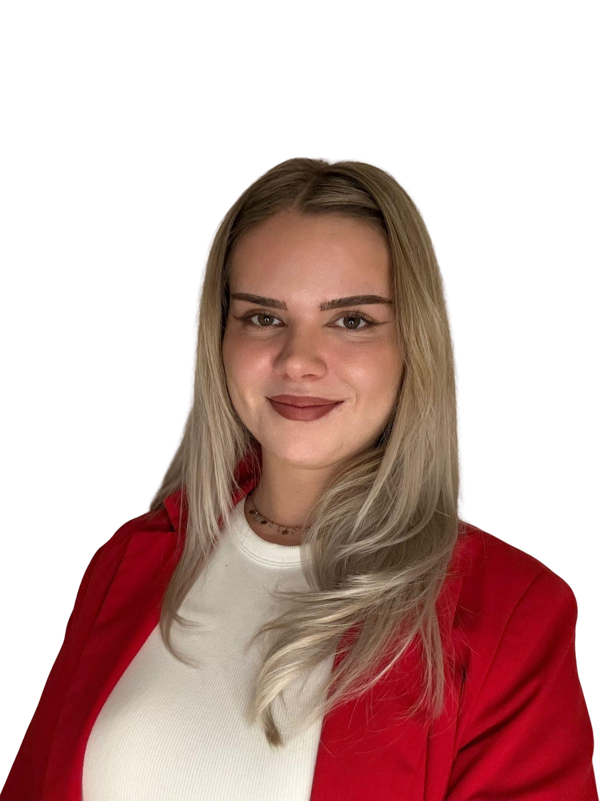
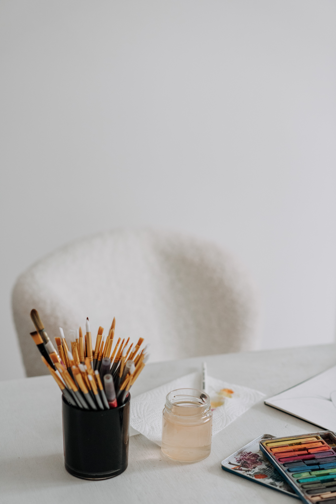
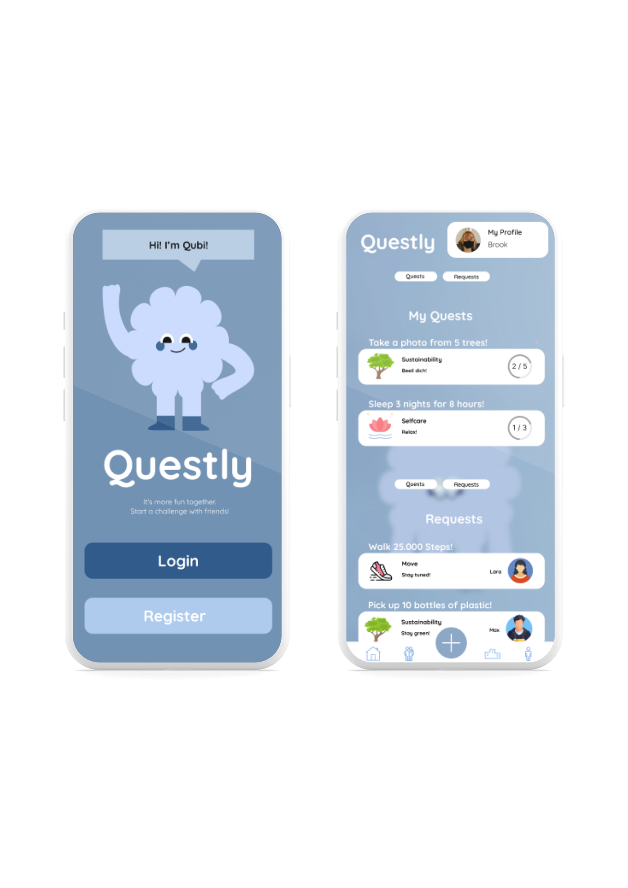
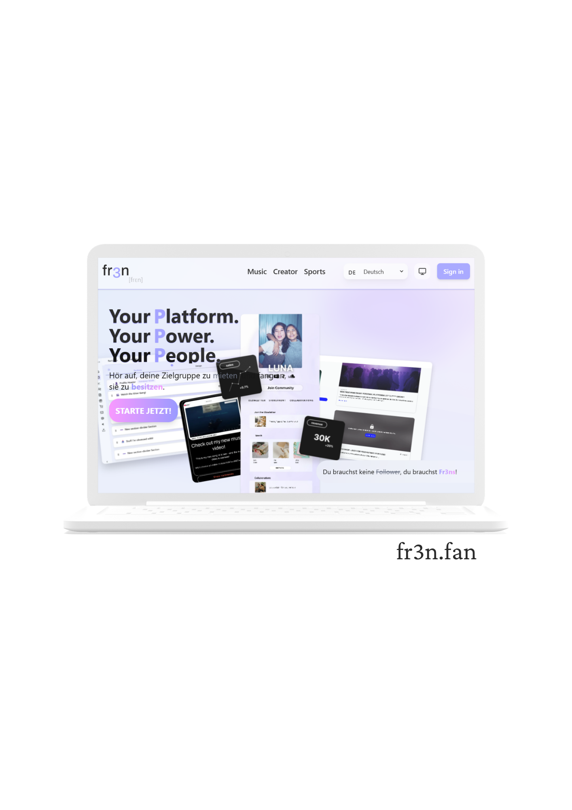
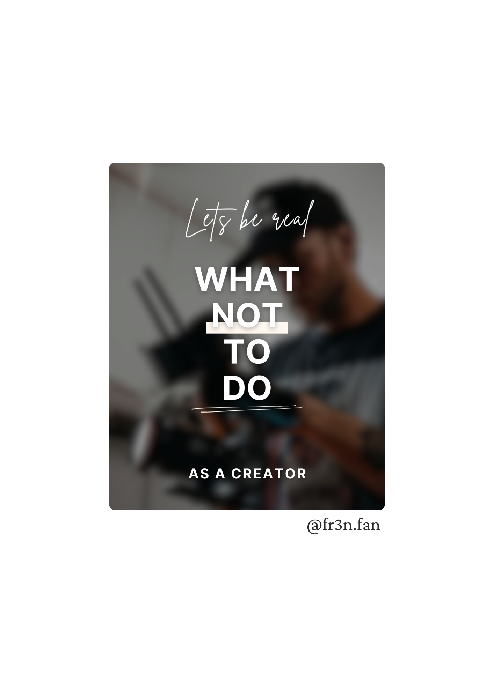

HEY ICH BIN
Bachelor of Science Medieninformatik
Frontend • UX/UI • App Development


Ich bin Emily Rekewitz und habe Medieninformatik an der Hochschule Bremen studiert. In meinem Studium konnte ich beide Welten kennenlernen – Design und Programmierung – eine Kombination, die perfekt zu mir passt. Dabei habe ich festgestellt, dass ich mir den technischen Teil nicht ohne Design vorstellen kann, denn genau dort gehe ich richtig auf. Während meines Pflichtpraktikums im Bereich Social Media Marketing und UX/UI-Design konnte ich meine Leidenschaft für Gestaltung und User Experience weiter vertiefen und praktische Erfahrungen sammeln. Ich arbeite mit verschiedenen Tools, von der Adobe Creative Cloud bis Figma, und liebe es, kreative Ideen visuell umzusetzen und funktional zu gestalten.
Im 6. Semester entwickelte ich im Team eine Gamification-App für gemeinsame Quests wie „20.000 Schritte“. Punkte, Badges und Rankings sorgen für Motivation und Wettbewerb.

Für das Praktikumsunternehmen fr3n gestaltete ich die Website mit Fokus auf UX/UI und ein nutzerfreundliches, modernes Design im Corporate Style. Der Prototyp entstand in Figma und wurde mit animierten Motion-Elementen umgesetzt.

Ein Schwerpunkt meines Praktikums bei fr3n war die Erstellung von Social-Media-Content für Instagram. Dabei konnte ich meine Kenntnisse in Grafikdesign und Typografie vertiefen und mich kreativ weiterentwickeln.

Bei diesem Werbevideo lag der Fokus darauf, der Marke ein Gesicht und eine Stimme zu geben. Das Format ist speziell für Instagram optimiert und setzt auf schnelle Schnitte und dynamische Bewegungen, um Aufmerksamkeit zu halten.
Eines meiner Highlights im Praktikum bei fr3n war die Produktion eines Werbevideos mit Fokus auf Motion Design als zentrales Gestaltungselement.